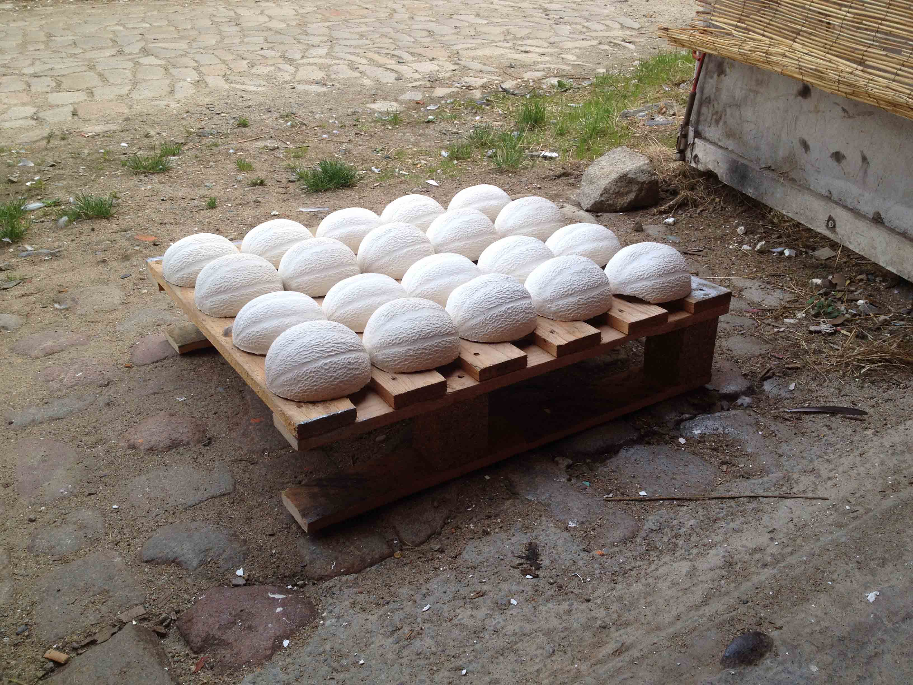

Melonfesse est un double objet réalisé en plâtre à partir de deux moules de demi-melon. Un tirage de 36 paires a été réalisé lors d’une résidence de deux semaines dans l’atelier du collectif Permis de construire à Nantes, invitée par Minhee Kim, Danaë Barbas et Laura Orlhiac, en septembre 2016.
Melonfesse is a double object made of plaster from two half-melon molds. A limited edition of 36 pair was created during a two-week residency in the studio of the art collective Permis de Construire in Nantes, invited by Minhee Kim, Danaë Barbas and Laura Orlhiac, in September 2016.
Melonfesse is a double object made of plaster from two half-melon molds. A limited edition of 36 pair was created during a two-week residency in the studio of the art collective Permis de Construire in Nantes, invited by Minhee Kim, Danaë Barbas and Laura Orlhiac, in September 2016.
